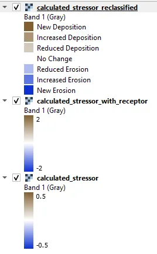
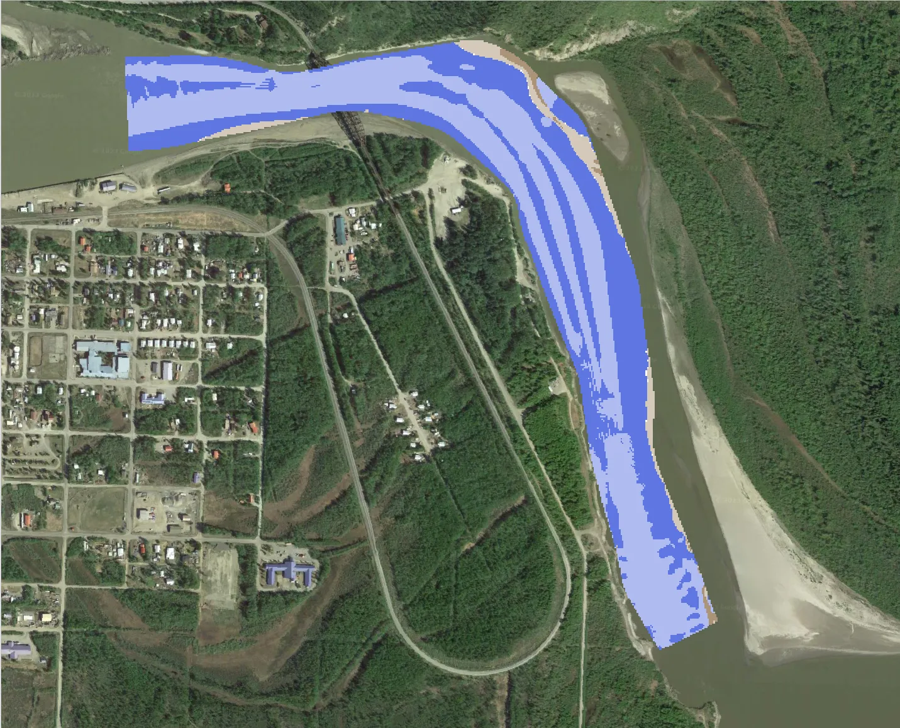
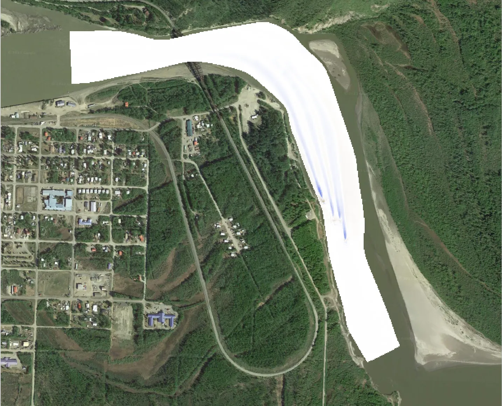

Sedimentation Analysis (Shear Stress)
Evaluate the impact of CEC devices on sediment mobility considering a single median grain size receptor in a CSV file.
Input
At this point you should have already setup the input files as detailed in Preparing Demo Input Files. To run this demonstration, use the Load GUI Inputs button located at the bottom left of the SEAT GUI, navigate to DEMO/DEMO unstructured/shear_stress_with_receptor_demo.ini, and click OK to load the inputs. If you need detailed instructions on how to load inputs, please refer to the Save & Load Configuration section in the Graphical User Interface documention.
Refer to Tanana River Demo Files for details on the model data which consists of individual .nc files for each flow return period. The period within the .nc filename determines the probability of occurrence.
Important
Ensure to reset the complete path to match the location on your machine. Your paths will be different than the ones shown in the example below.
{kind=link}
Output
The above input set evaluates the impact on sediment mobility considering a single median grain size receptor in a CSV file. The probability-weighted shear stress with devices is compared to the scenario without devices. The resulting stressor (change in shear stress), stressor with receptor (change in sediment mobility), and the reclassified stressor from the analysis are illustrated below.
Each layer will look as shown below. To add the map layer see the Quick Map Services section.
| 
Layers Legend |

Calculated Stressor Reclassified |
|
Stressor with Receptor |

Calculated Stressor |
{kind=link}
{kind=link}
{kind=link}
{kind=link}
Output Files
Additional output files can be found in the specifed Output folder.
Output
└───Shear_stress_with_receptor
calculated_stressor.csv
calculated_stressor.tif
calculated_stressor_at_receptor.csv
calculated_stressor_reclassified.csv
calculated_stressor_reclassified.tif
calculated_stressor_reclassified_at_receptor.csv
calculated_stressor_with_receptor.csv
calculated_stressor_with_receptor.tif
receptor.tif